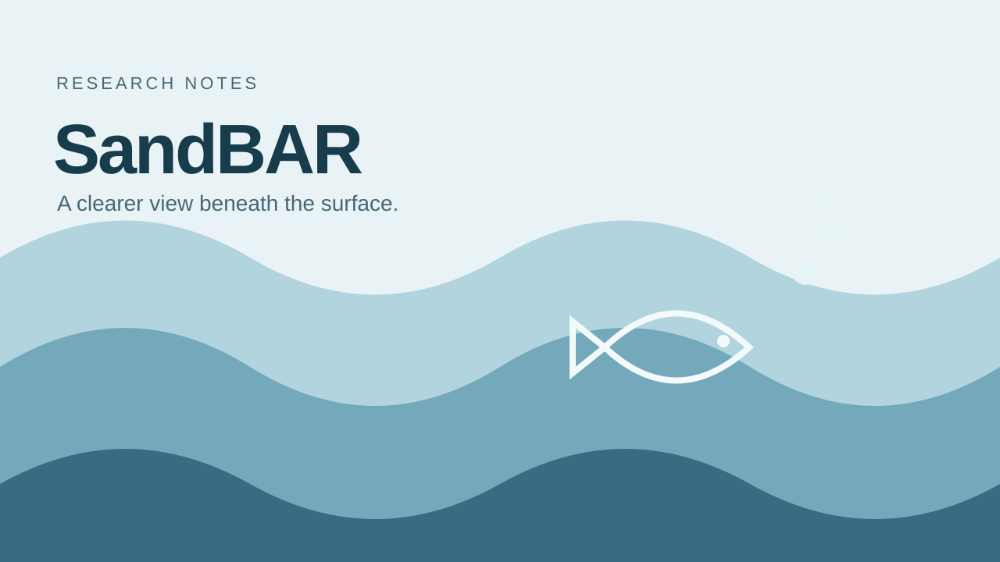

November 2026 · Research notes
A clearer view beneath the surface
Underwater image restoration asks a model to recover useful visual information from degraded images. SandBAR explores a design that processes complementary frequency bands differently and uses auxiliary guidance during training.

Complementary frequency bands
The architecture combines a band-asymmetric sandwich block, SPARK, low-frequency guidance, and a three-scale spatial-frequency objective. These components connect spatial features with frequency information within the restoration model.

Scaffolding during training
PaST trains the model with the SPARK scaffold and removes its auxiliary branches for inference. The released implementation provides a pretrained checkpoint, image restoration instructions, and evaluation scripts.
Explore the work
SandBAR is accepted at WACV 2027. The paper and code describe the experimental setup, results, and implementation in detail.